Candidate List 20260610 Previous Day Next Day Section 1: New Sources (age<1d) Cosmological Afterglow
Section 2: Old (1-5d) sources observed last night placeholder
Section 1: New Afterglow/FBOT Cands Last Night (1)
1. ZTF26abayzka (Afterglow?) [Back to Top] [Share] [Trigger Swift] [Fritz ] [Lasair ]RA, Dec: 262.62331, 52.1656 17h30m29.59s, 52d 9m56.15sGalactic (l, b): 79.41712, 33.29517 ext(g-r) = 0.034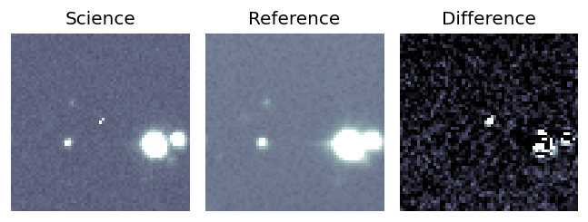
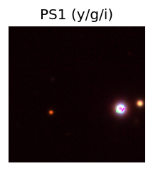
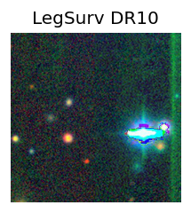
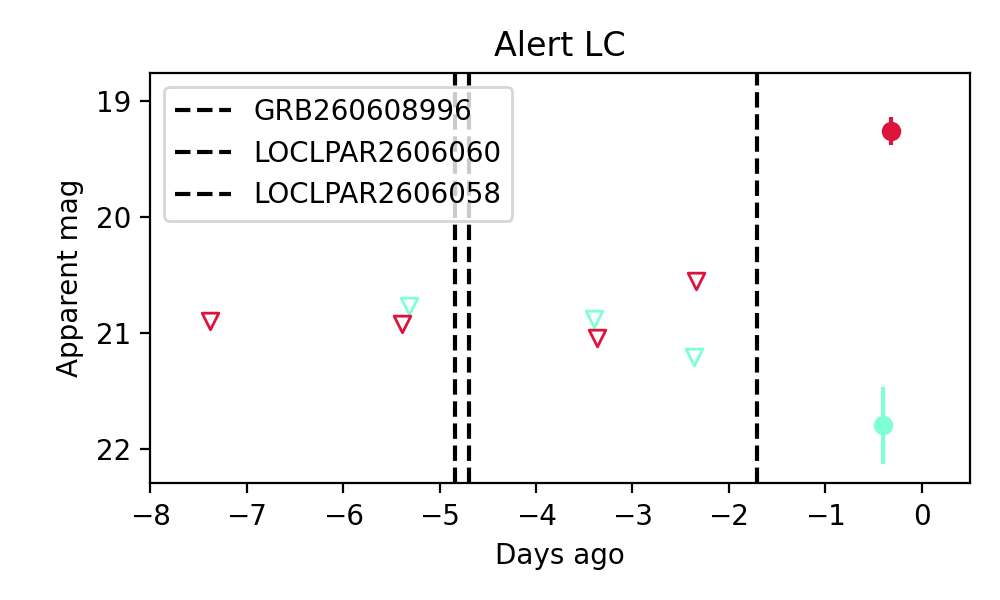
Consistent with synchrotron, g-r>0!
Section 2: Older Sources Observed Last Night (30)
0. ZTF26aaziyef (FBOT?) [Back to Top] [Share] [Trigger Swift] [Fritz ] [Lasair ]RA, Dec: 210.1634, 50.10564 14h 0m39.22s, 50d 6m20.29sGalactic (l, b): 97.63336, 63.48585 ext(g-r) = 0.016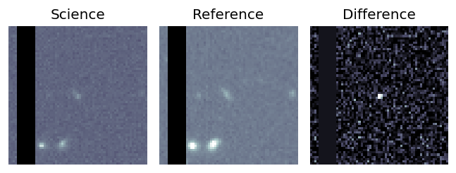
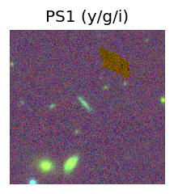
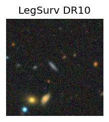
peak abs mag = -20.01 LegacySurvey: 1 sources in 3 arcsec Closest: d = 1.60 arcsec, 60.2 deg (east of north) photoz=0.15 (68% bounds 0.12, 0.18), type=SER peak abs mag = -19.74 (68% bounds -19.29, -20.22) 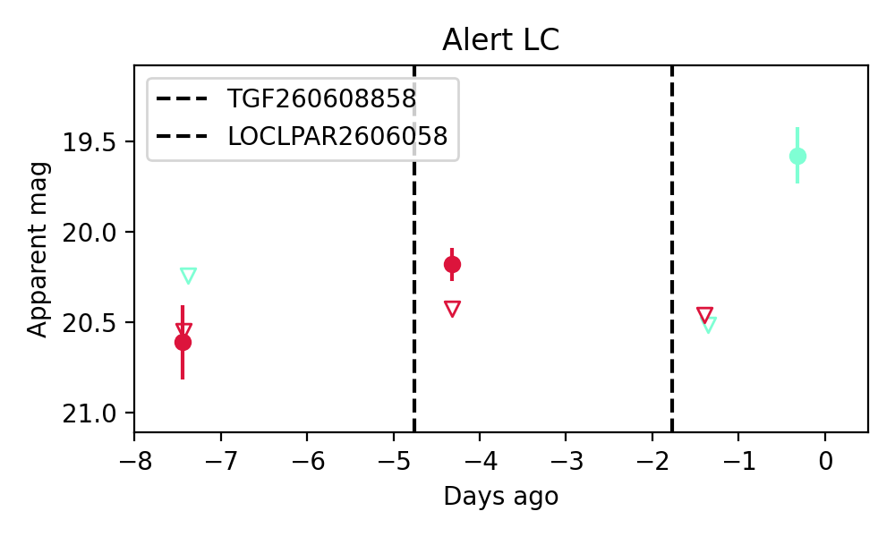
1. ZTF26aazmvmk (Afterglow?) [Back to Top] [Share] [Trigger Swift] [Fritz ] [Lasair ]RA, Dec: 10.7247, 32.58232 0h42m53.93s, 32d34m56.36sGalactic (l, b): 120.8495, -30.2549 ext(g-r) = 0.084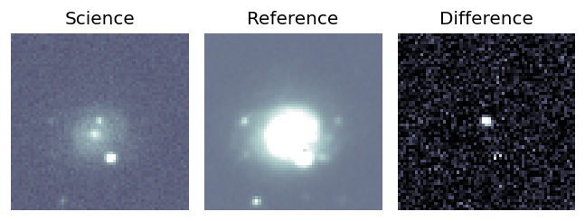
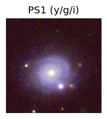
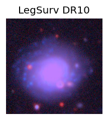
peak abs mag = -17.05 LegacySurvey: 1 sources in 3 arcsec Closest: d = 5.29 arcsec, 162.8 deg (east of north) photoz=0.01 (68% bounds 0.01, 0.02), type=SER peak abs mag = -16.63 (68% bounds -15.96, -17.22) 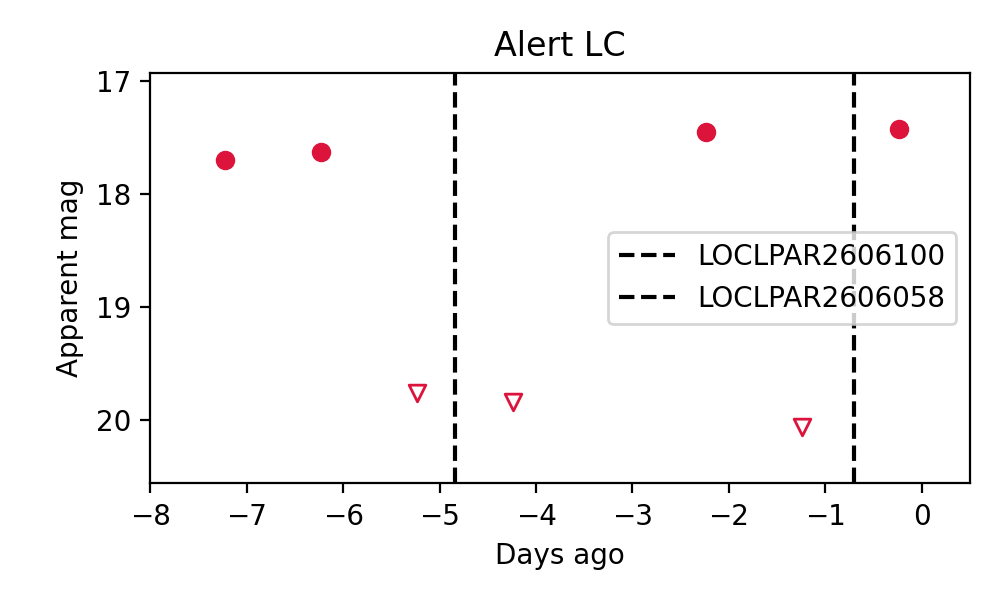
2. ZTF26aaztkuj (FBOT?) [Back to Top] [Share] [Trigger Swift] [Fritz ] [Lasair ]RA, Dec: 220.52591, -19.93454 14h42m6.22s, -19d-56m-4.34sGalactic (l, b): 335.51097, 35.84096 WARNING: -4.0 deg from ecliptic plane ext(g-r) = 0.113LegacySurvey: 1 sources in 3 arcsec Closest: d = 2.59 arcsec, 75.2 deg (east of north) photoz=0.15 (68% bounds 0.03, 0.27), type=PSF peak abs mag = -20.74 (68% bounds -16.98, -22.16) Consistent with synchrotron, g-r>0!
3. ZTF26aaztwcq (Afterglow?) [Back to Top] [Share] [Trigger Swift] [Fritz ] [Lasair ]RA, Dec: 239.32552, 11.28156 15h57m18.13s, 11d16m53.63sGalactic (l, b): 22.26617, 43.65936 ext(g-r) = 0.057peak abs mag = -17.92 peak abs mag = -18.29 LegacySurvey: 1 sources in 3 arcsec Closest: d = 0.19 arcsec, 265.8 deg (east of north) photoz=0.06 (68% bounds 0.04, 0.07), type=EXP peak abs mag = -17.85 (68% bounds -17.07, -18.36) Consistent with synchrotron, g-r>0!
4. ZTF26aazuwhc (FBOT?) [Back to Top] [Share] [Trigger Swift] [Fritz ] [Lasair ]RA, Dec: 251.98677, -25.02912 16h47m56.83s, -25d-1m-44.85sGalactic (l, b): 355.81474, 12.76066 WARNING: -2.6 deg from ecliptic plane ext(g-r) = 0.397PS1: 1 source in 3 arcsec Closest: d = 2.91 arcsec photoz=0.07+/-0.01 peak abs mag = -20.55 Consistent with synchrotron, g-r>0!
5. ZTF26aazzcps (Afterglow?) [Back to Top] [Share] [Trigger Swift] [Fritz ] [Lasair ]RA, Dec: 212.89597, -6.84099 14h11m35.03s, -6d-50m-27.56sGalactic (l, b): 335.5602, 50.88255 ext(g-r) = 0.031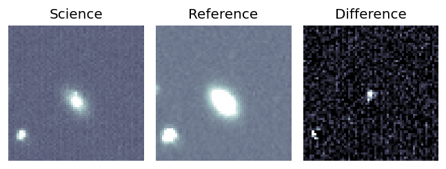
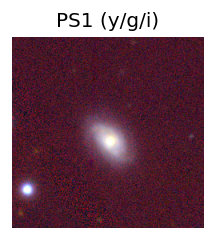
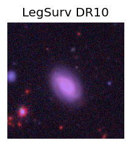
peak abs mag = -19.14 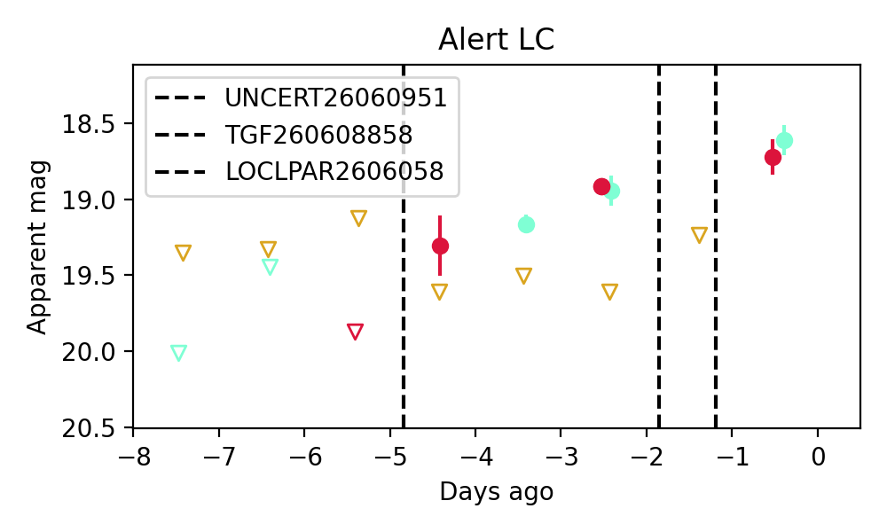
Consistent with synchrotron, g-r>0!
6. ZTF26abacaai (Afterglow?FBOT?) [Back to Top] [Share] [Trigger Swift] [Fritz ] [Lasair ]RA, Dec: 260.58533, 41.03665 17h22m20.48s, 41d 2m11.95sGalactic (l, b): 65.9698, 33.62978 ext(g-r) = 0.034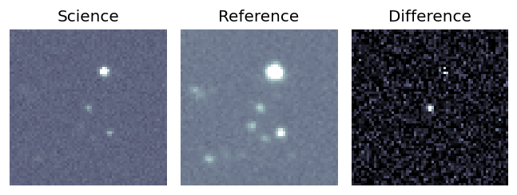
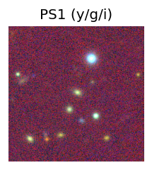
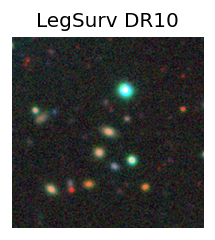
peak abs mag = -20.97 LegacySurvey: 1 sources in 3 arcsec Closest: d = 0.33 arcsec, 287.1 deg (east of north) photoz=0.18 (68% bounds 0.15, 0.22), type=SER peak abs mag = -19.89 (68% bounds -19.41, -20.28) 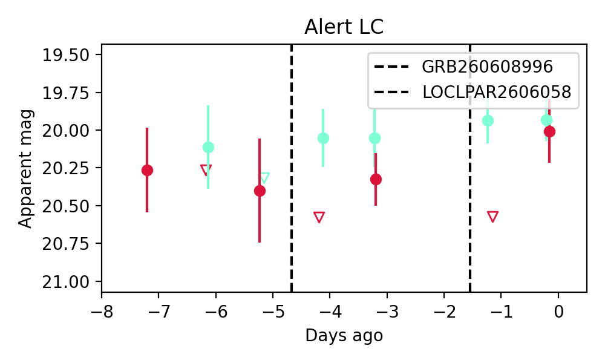
Consistent with synchrotron, g-r>0!
7. ZTF26abaceta (Afterglow?) [Back to Top] [Share] [Trigger Swift] [Fritz ] [Lasair ]RA, Dec: 285.81478, 8.63593 19h 3m15.55s, 8d38m9.36sGalactic (l, b): 41.96015, 1.32385 ext(g-r) = 3.628PS1: 1 source in 3 arcsec Closest: d = 0.58 arcsec photoz=0.43+/-0.09 peak abs mag = -28.42
8. ZTF26abaftbn (FBOT?) [Back to Top] [Share] [Trigger Swift] [Fritz ] [Lasair ]RA, Dec: 227.06437, -4.72124 15h 8m15.45s, -4d-43m-16.48sGalactic (l, b): 354.21667, 44.1086 ext(g-r) = 0.098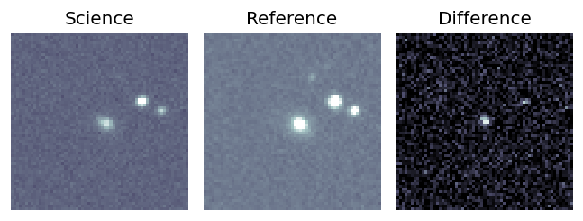
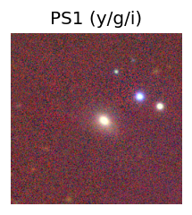
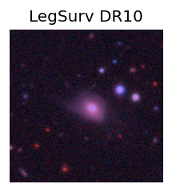
peak abs mag = -19.51 LegacySurvey: 1 sources in 3 arcsec Closest: d = 2.80 arcsec, 247.1 deg (east of north) photoz=0.09 (68% bounds 0.08, 0.11), type=SER peak abs mag = -18.83 (68% bounds -18.37, -19.17) 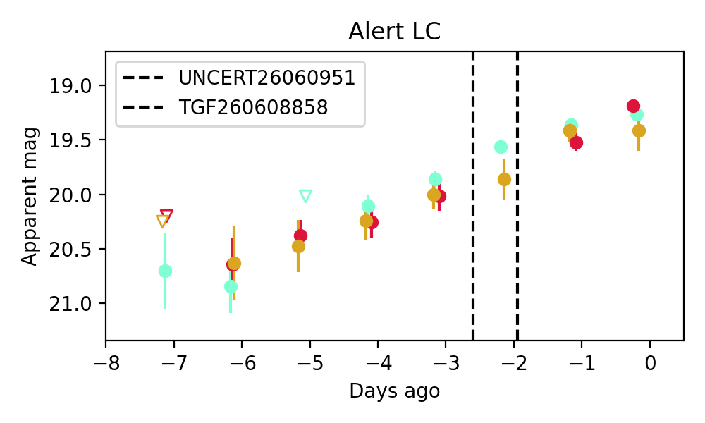
Consistent with synchrotron, g-r>0!
9. ZTF26abafxlk (FBOT?) [Back to Top] [Share] [Trigger Swift] [Fritz ] [Lasair ]RA, Dec: 244.48424, 14.40345 16h17m56.22s, 14d24m12.41sGalactic (l, b): 28.95435, 40.43397 ext(g-r) = 0.06peak abs mag = -18.79 LegacySurvey: 1 sources in 3 arcsec Closest: d = 1.62 arcsec, 334.5 deg (east of north) photoz=0.15 (68% bounds 0.06, 0.74), type=EXP peak abs mag = -20.0 (68% bounds -17.87, -23.98) Consistent with synchrotron, g-r>0!
10. ZTF26abagkaa (FBOT?) [Back to Top] [Share] [Trigger Swift] [Fritz ] [Lasair ]RA, Dec: 259.76876, 56.36176 17h19m4.50s, 56d21m42.34sGalactic (l, b): 84.48777, 34.95839 ext(g-r) = 0.022peak abs mag = -21.32 LegacySurvey: 1 sources in 3 arcsec Closest: d = 0.68 arcsec, 9.9 deg (east of north) photoz=0.12 (68% bounds 0.09, 0.16), type=EXP peak abs mag = -19.19 (68% bounds -18.49, -19.83)
11. ZTF26abahemy (Afterglow?) [Back to Top] [Share] [Trigger Swift] [Fritz ] [Lasair ]RA, Dec: 260.28805, -18.39169 17h21m9.13s, -18d-23m-30.10sGalactic (l, b): 5.91015, 10.38674 WARNING: 4.74 deg from ecliptic plane ext(g-r) = 0.333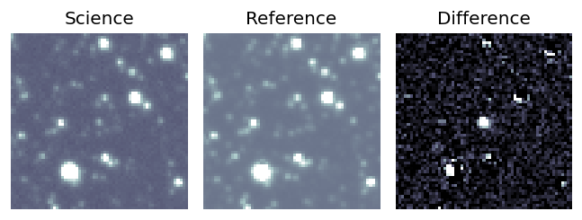
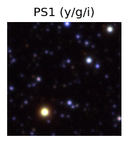
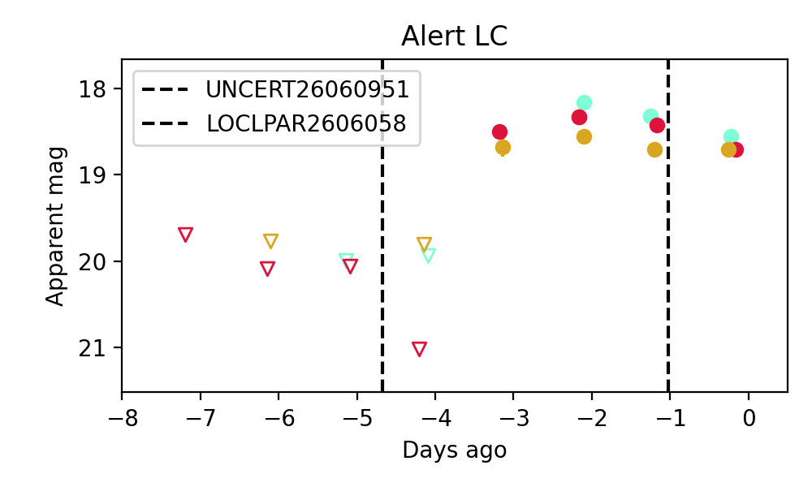
12. ZTF26abamdcg (FBOT?) [Back to Top] [Share] [Trigger Swift] [Fritz ] [Lasair ]RA, Dec: 200.49409, 5.82338 13h21m58.58s, 5d49m24.18sGalactic (l, b): 323.12764, 67.48985 ext(g-r) = 0.039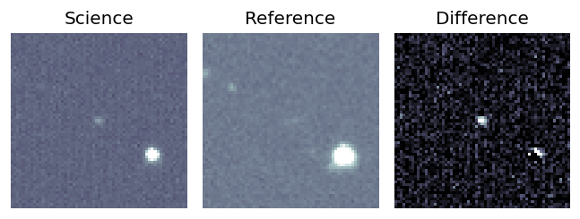
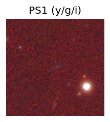
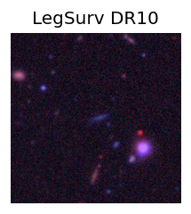
peak abs mag = -24.31 LegacySurvey: 1 sources in 3 arcsec Closest: d = 1.60 arcsec, 270.1 deg (east of north) photoz=0.1 (68% bounds 0.06, 0.18), type=EXP peak abs mag = -19.05 (68% bounds -17.65, -20.31) 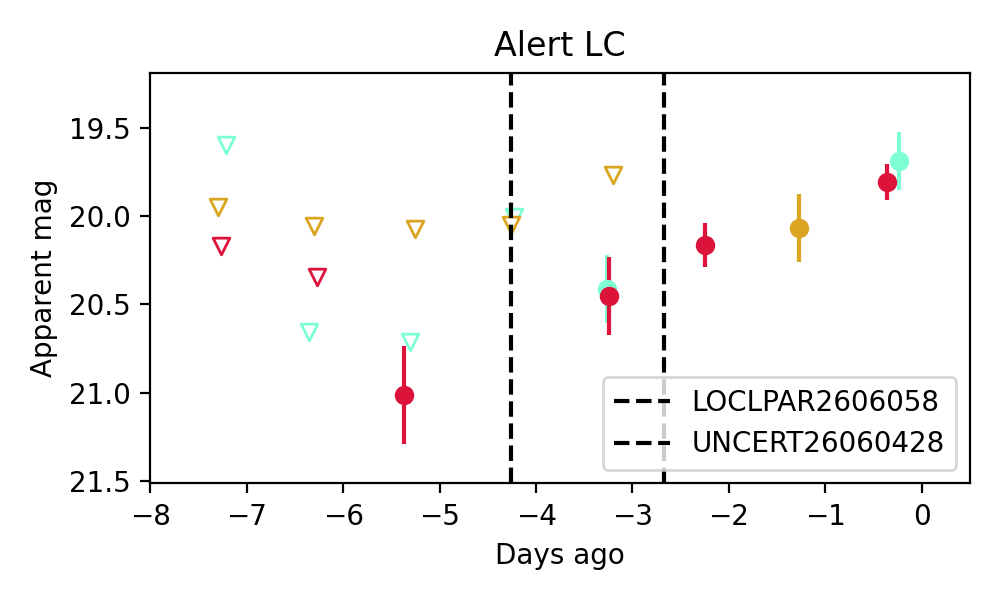
Consistent with synchrotron, g-r>0!
13. ZTF26abamnrt (Afterglow?) [Back to Top] [Share] [Trigger Swift] [Fritz ] [Lasair ]RA, Dec: 247.04328, 35.70161 16h28m10.39s, 35d42m5.79sGalactic (l, b): 57.61745, 43.55321 ext(g-r) = 0.017peak abs mag = -19.50 peak abs mag = -18.88 LegacySurvey: 1 sources in 3 arcsec Closest: d = 1.78 arcsec, 47.7 deg (east of north) photoz=0.13 (68% bounds 0.11, 0.15), type=SER peak abs mag = -19.07 (68% bounds -18.6, -19.47) Consistent with synchrotron, g-r>0!
14. ZTF26abamtdw (FBOT?) [Back to Top] [Share] [Trigger Swift] [Fritz ] [Lasair ]RA, Dec: 271.20629, 50.23451 18h 4m49.51s, 50d14m4.25sGalactic (l, b): 77.87381, 27.74177 ext(g-r) = 0.049LegacySurvey: 1 sources in 3 arcsec Closest: d = 1.71 arcsec, 1.0 deg (east of north) photoz=0.32 (68% bounds 0.25, 0.47), type=EXP peak abs mag = -21.47 (68% bounds -20.79, -22.43) Consistent with synchrotron, g-r>0!
15. ZTF26abamuti (Afterglow?) [Back to Top] [Share] [Trigger Swift] [Fritz ] [Lasair ]RA, Dec: 300.21353, 40.72116 20h 0m51.25s, 40d43m16.19sGalactic (l, b): 76.31559, 5.52513 ext(g-r) = 0.459
16. ZTF26abarrek (FBOT?) [Back to Top] [Share] [Trigger Swift] [Fritz ] [Lasair ]RA, Dec: 259.86739, -1.811 17h19m28.17s, -1d-48m-39.59sGalactic (l, b): 20.30349, 19.45394 ext(g-r) = 0.485PS1: 1 source in 3 arcsec Closest: d = 0.62 arcsec photoz=0.09+/-0.01 peak abs mag = -20.10 Consistent with synchrotron, g-r>0!
17. ZTF26abatejl (FBOT?) [Back to Top] [Share] [Trigger Swift] [Fritz ] [Lasair ]RA, Dec: 311.66892, -8.72703 20h46m40.54s, -8d-43m-37.29sGalactic (l, b): 38.35091, -29.54475 ext(g-r) = 0.08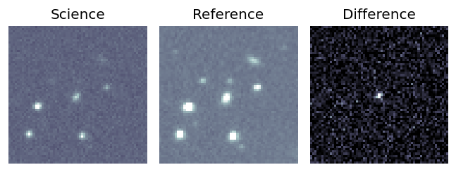
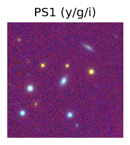
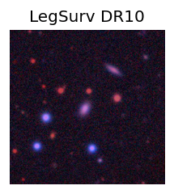
LegacySurvey: 1 sources in 3 arcsec Closest: d = 1.39 arcsec, 129.4 deg (east of north) photoz=0.13 (68% bounds 0.11, 0.14), type=SER peak abs mag = -19.3 (68% bounds -19.02, -19.54) 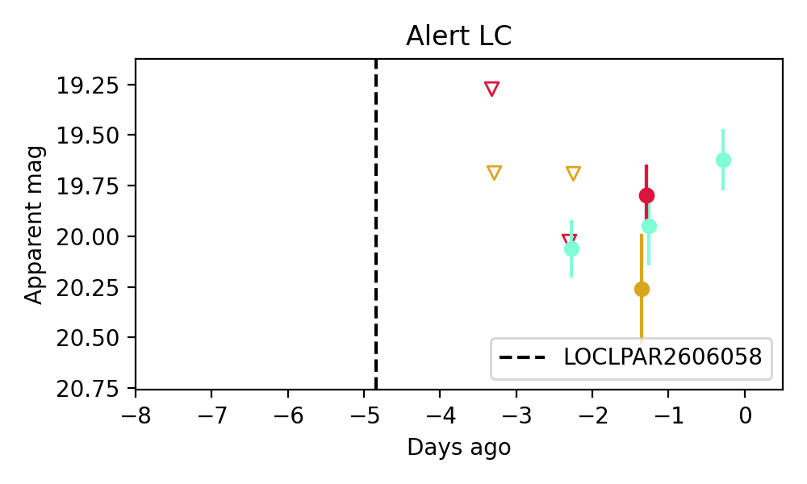
Consistent with synchrotron, g-r>0!
18. ZTF26abatncr (Afterglow?) [Back to Top] [Share] [Trigger Swift] [Fritz ] [Lasair ]RA, Dec: 288.59621, -17.26282 19h14m23.09s, -17d-15m-46.14sGalactic (l, b): 19.86219, -12.72485 ext(g-r) = 0.125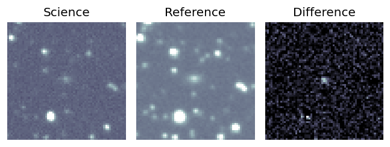
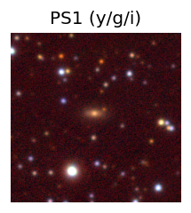
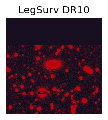
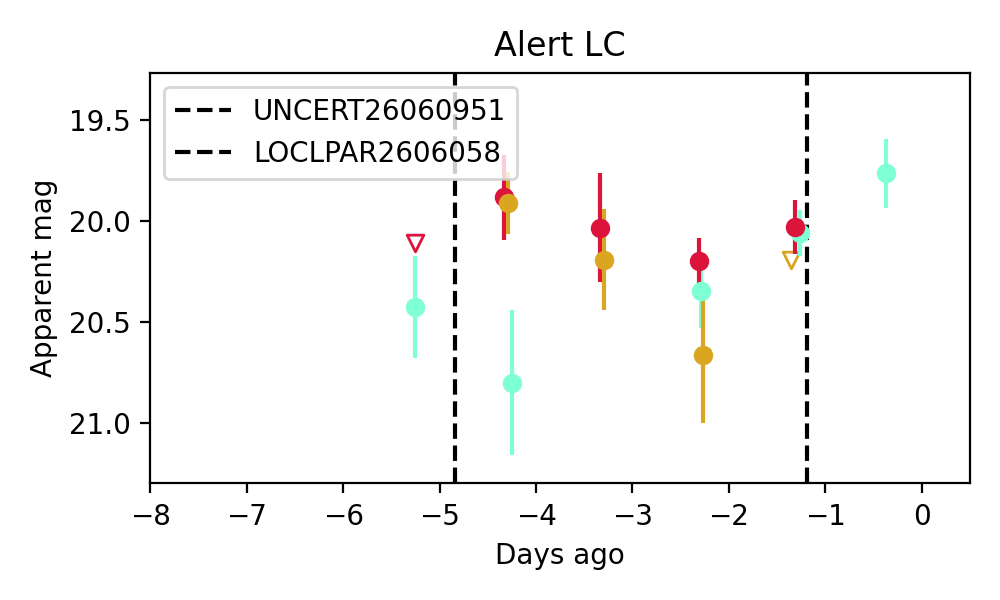
Consistent with synchrotron, g-r>0!
19. ZTF26abauogj (Afterglow?FBOT?) [Back to Top] [Share] [Trigger Swift] [Fritz ] [Lasair ]RA, Dec: 209.05692, 11.60719 13h56m13.66s, 11d36m25.87sGalactic (l, b): 350.4911, 68.26825 ext(g-r) = 0.022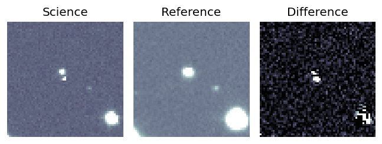
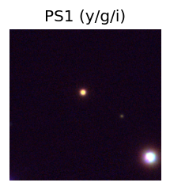
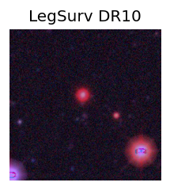
LegacySurvey: 1 sources in 3 arcsec Closest: d = 1.39 arcsec, 73.7 deg (east of north) photoz=0.95 (68% bounds 0.56, 1.38), type=REX peak abs mag = -25.83 (68% bounds -24.44, -26.83) 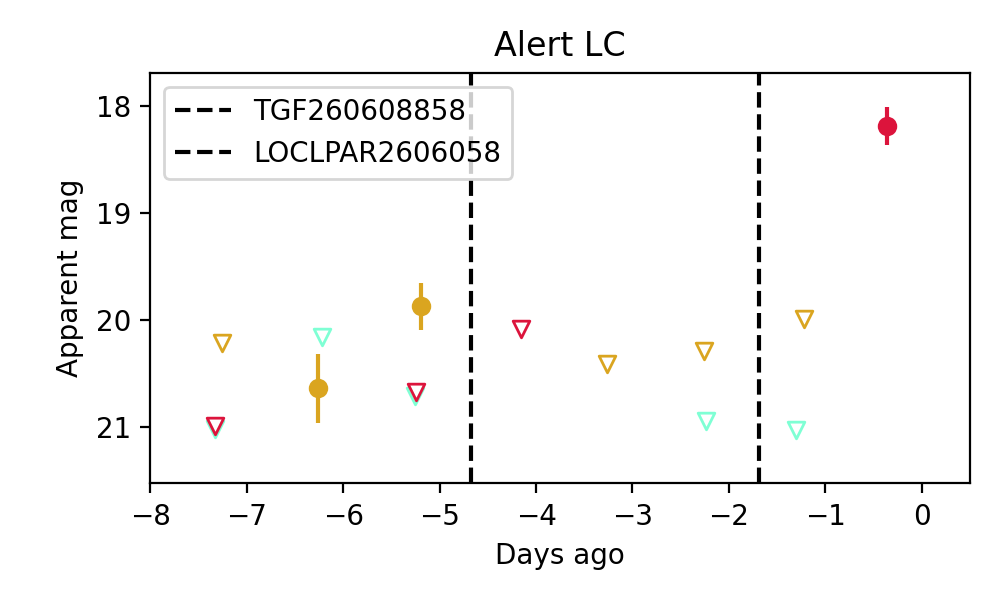
20. ZTF26abavafk (FBOT?) [Back to Top] [Share] [Trigger Swift] [Fritz ] [Lasair ]RA, Dec: 186.18696, -12.90197 12h24m44.87s, -12d-54m-7.10sGalactic (l, b): 292.89897, 49.44913 ext(g-r) = 0.053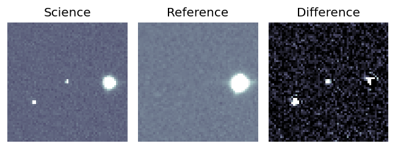
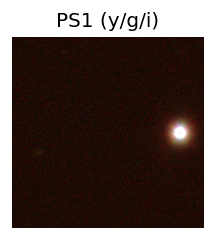
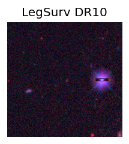
LegacySurvey: 1 sources in 3 arcsec Closest: d = 1.65 arcsec, 232.0 deg (east of north) photoz=0.9 (68% bounds 0.8, 1.0), type=DEV peak abs mag = -25.1 (68% bounds -24.79, -25.39) 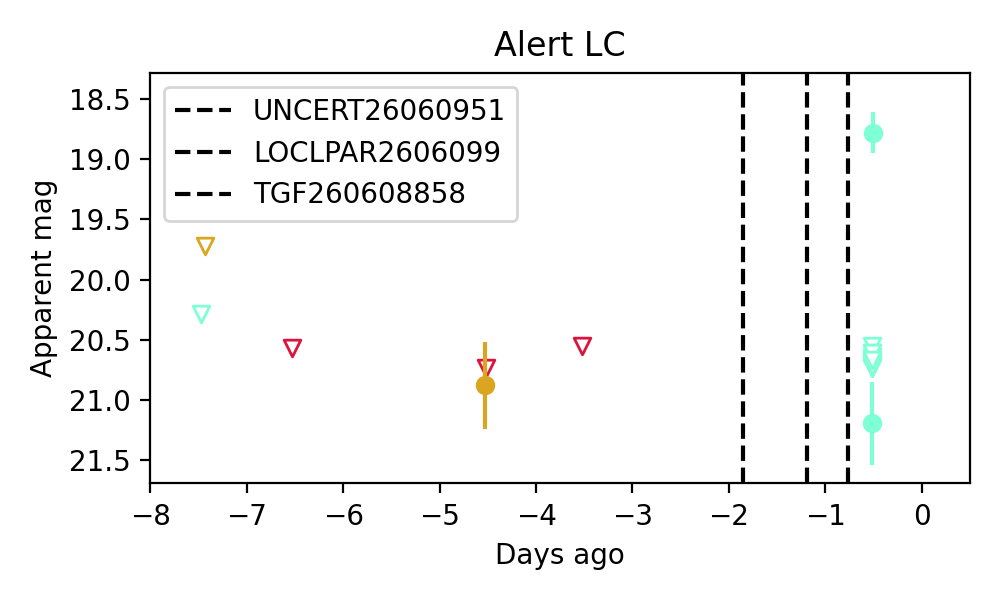
21. ZTF26abawmga (FBOT?) [Back to Top] [Share] [Trigger Swift] [Fritz ] [Lasair ]RA, Dec: 221.6499, 0.93881 14h46m35.98s, 0d56m19.70sGalactic (l, b): 354.29036, 51.93767 ext(g-r) = 0.055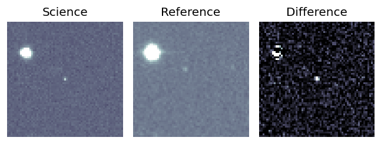
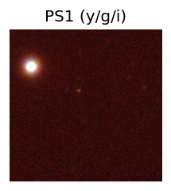
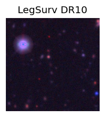
LegacySurvey: 1 sources in 3 arcsec Closest: d = 1.55 arcsec, 95.9 deg (east of north) photoz=1.19 (68% bounds 1.04, 1.35), type=EXP peak abs mag = -25.41 (68% bounds -25.06, -25.75)
22. ZTF26abawozd (FBOT?) [Back to Top] [Share] [Trigger Swift] [Fritz ] [Lasair ]RA, Dec: 209.56459, 4.82405 13h58m15.50s, 4d49m26.58sGalactic (l, b): 341.41184, 62.59244 ext(g-r) = 0.031LegacySurvey: 1 sources in 3 arcsec Closest: d = 1.71 arcsec, 354.0 deg (east of north) photoz=0.62 (68% bounds 0.31, 1.07), type=EXP peak abs mag = -23.88 (68% bounds -22.15, -25.34)
23. ZTF26abawwyp (Afterglow?) [Back to Top] [Share] [Trigger Swift] [Fritz ] [Lasair ]RA, Dec: 268.00514, -0.10575 17h52m1.23s, 0d-6m-20.71sGalactic (l, b): 25.94018, 13.1392 ext(g-r) = 0.375PS1: 1 source in 3 arcsec Closest: d = 0.73 arcsec photoz=1.16+/-0.38 peak abs mag = -26.57 Consistent with synchrotron, g-r>0!
24. ZTF26abaxdbf (Afterglow?) [Back to Top] [Share] [Trigger Swift] [Fritz ] [Lasair ]RA, Dec: 239.20456, -10.77217 15h56m49.09s, -10d-46m-19.82sGalactic (l, b): 359.1456, 31.21956 ext(g-r) = 0.282LegacySurvey: 1 sources in 3 arcsec Closest: d = 2.52 arcsec, 221.2 deg (east of north) photoz=0.07 (68% bounds 0.04, 0.12), type=REX peak abs mag = -17.75 (68% bounds -16.24, -18.83) Consistent with synchrotron, g-r>0!
25. ZTF26abaxjou (FBOT?) [Back to Top] [Share] [Trigger Swift] [Fritz ] [Lasair ]RA, Dec: 196.93416, 8.98514 13h 7m44.20s, 8d59m6.52sGalactic (l, b): 315.67871, 71.45239 ext(g-r) = 0.031peak abs mag = -21.07 LegacySurvey: 1 sources in 3 arcsec Closest: d = 0.35 arcsec, 13.6 deg (east of north) photoz=0.33 (68% bounds 0.28, 0.4), type=SER peak abs mag = -21.46 (68% bounds -21.05, -21.92)
26. ZTF26abayahd (FBOT?) [Back to Top] [Share] [Trigger Swift] [Fritz ] [Lasair ]RA, Dec: 301.09829, 11.91716 20h 4m23.59s, 11d55m1.76sGalactic (l, b): 52.12115, -10.27566 ext(g-r) = 0.134PS1: 1 source in 3 arcsec Closest: d = 0.21 arcsec photoz=0.48+/-0.09 peak abs mag = -23.50
27. ZTF26abayidq (Afterglow?) [Back to Top] [Share] [Trigger Swift] [Fritz ] [Lasair ]RA, Dec: 249.71148, -8.91814 16h38m50.76s, -8d-55m-5.30sGalactic (l, b): 8.01239, 24.2097 ext(g-r) = 0.449
28. ZTF26abayrmv (Afterglow?) [Back to Top] [Share] [Trigger Swift] [Fritz ] [Lasair ]RA, Dec: 224.35528, 32.55023 14h57m25.27s, 32d33m0.81sGalactic (l, b): 51.87166, 62.25236 ext(g-r) = 0.019peak abs mag = -17.81 LegacySurvey: 1 sources in 3 arcsec Closest: d = 0.24 arcsec, 225.9 deg (east of north) photoz=0.13 (68% bounds 0.1, 0.15), type=SER peak abs mag = -19.23 (68% bounds -18.56, -19.54)
29. ZTF26abbbfzc (FBOT?) [Back to Top] [Share] [Trigger Swift] [Fritz ] [Lasair ]RA, Dec: 270.52158, -12.89836 18h 2m5.18s, -12d-53m-54.08sGalactic (l, b): 15.79412, 4.79469 ext(g-r) = 1.55PS1: 1 source in 3 arcsec Closest: d = 0.22 arcsec photoz=0.04+/-0.32 peak abs mag = -19.79 Consistent with synchrotron, g-r>0!